AssetsLab 当前预览
当前页面只展示新的测试基底、推荐横向基底修正版、纵向候选和最新无 GUI 捕获结果。
新流程：阶段 1–4 / 正面骨架、双腿、骨盆与摆臂
阶段 1 已验证静止对称与基线。阶段 2 只让双腿运动，阶段 3 只加入不超过 6px 的骨盆上下起伏，阶段 4 才加入与对应腿反相的摆臂。头部、落脚点、骨盆位移与前后腿层次均沿用已通过的阶段。浅金色腿是本帧前腿，蓝色腿为后腿，橙色关节为骨盆，绿色为摆臂。
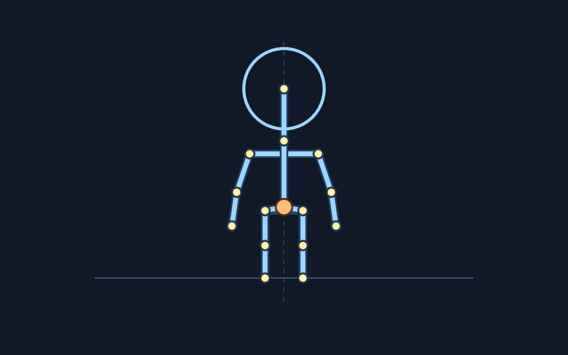
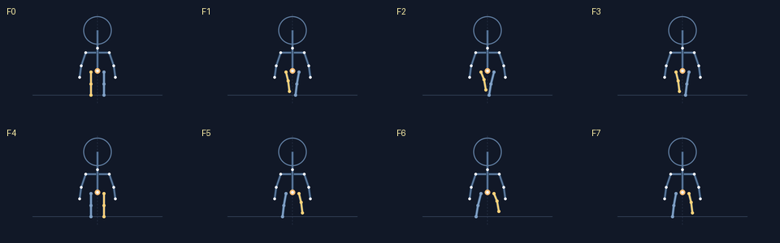
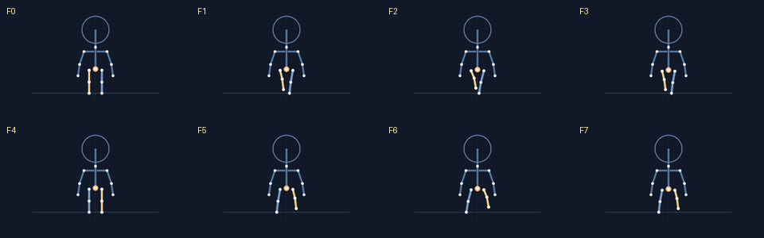
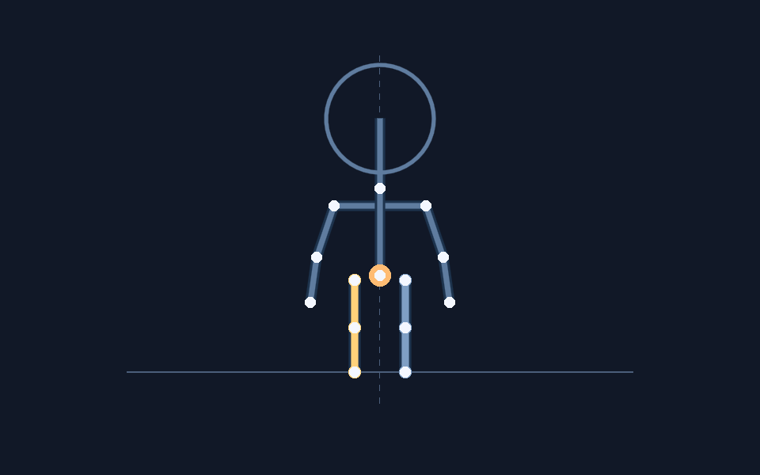
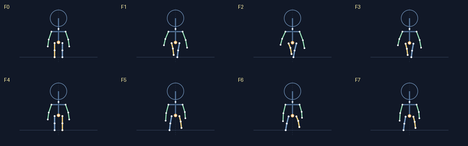
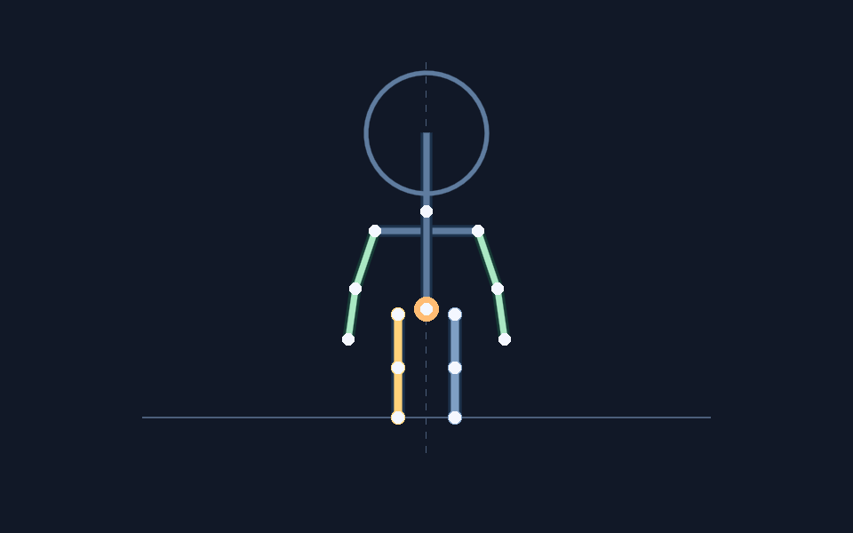
新流程：阶段 6A–6B / 背面骨架与双腿循环
背视图已验证对称、基线与交替双腿循环。紫色标签仅标识背视图。
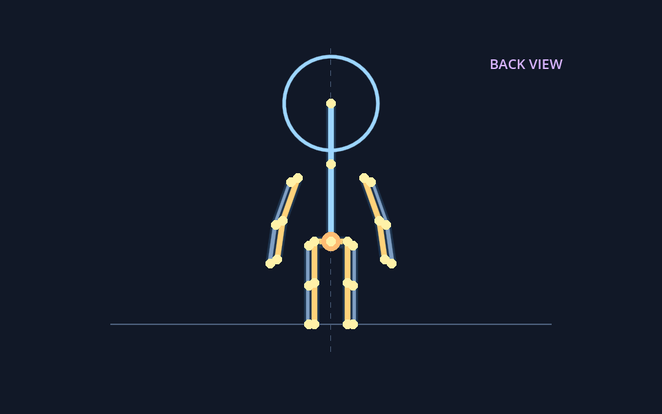
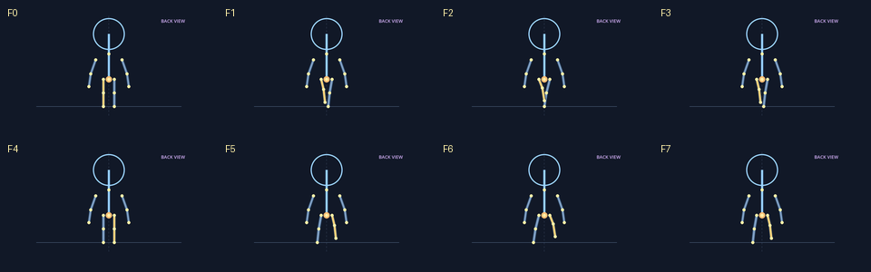
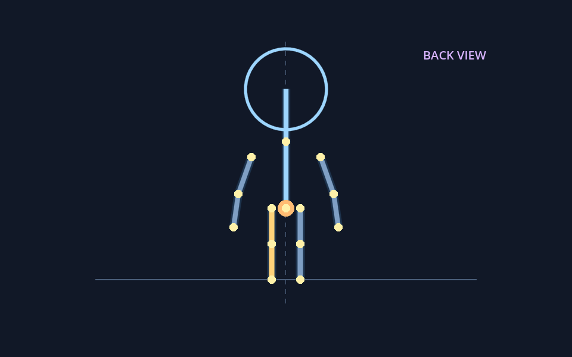
新流程：阶段 5A–5D / 完整右向侧面骨架循环
5A 锁定向右朝向、前后肢体层次和共同脚底基线。5B 只让双腿运动：F0/F4 为接触，F1–F3 为后腿抬起，F5–F7 为前腿抬起。5C 只加入不超过 6px 的骨盆上下起伏，双脚与手臂仍保持已验证坐标。蓝色为后侧肢体，浅金色为前侧肢体。
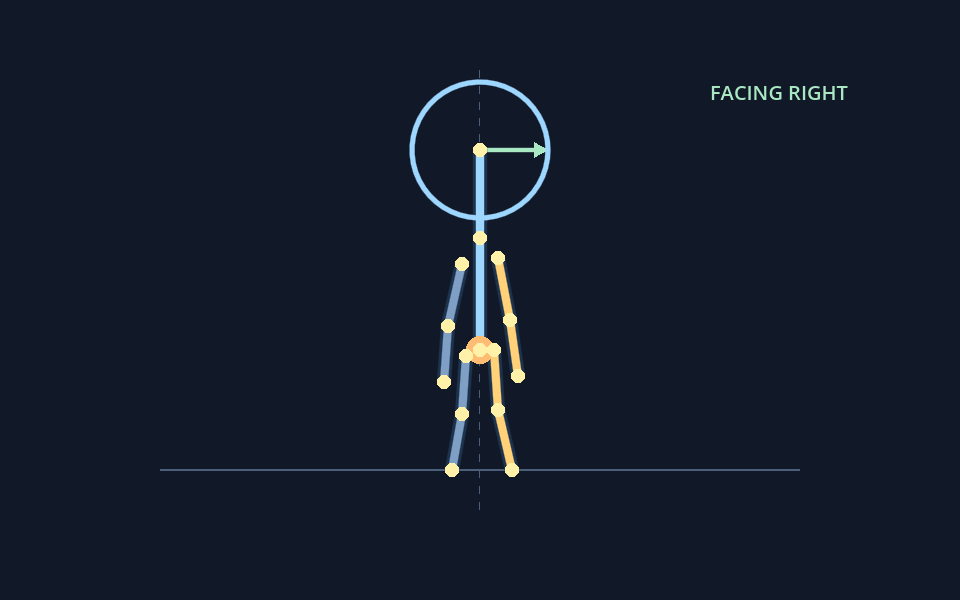
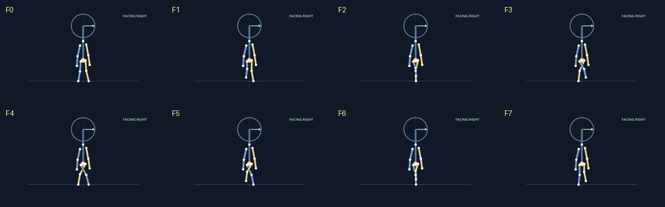
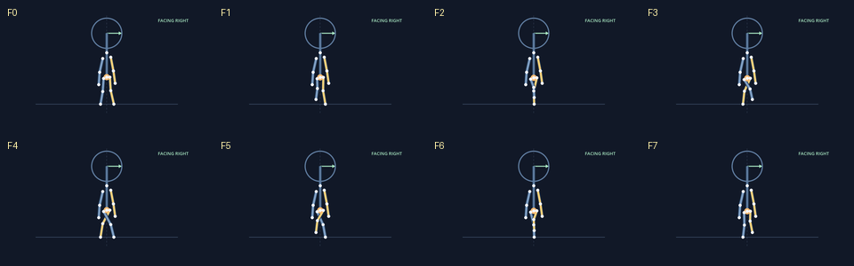
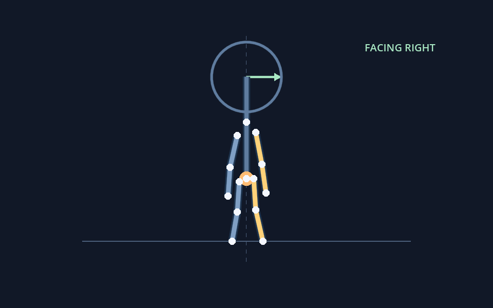
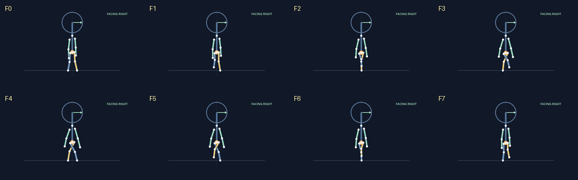
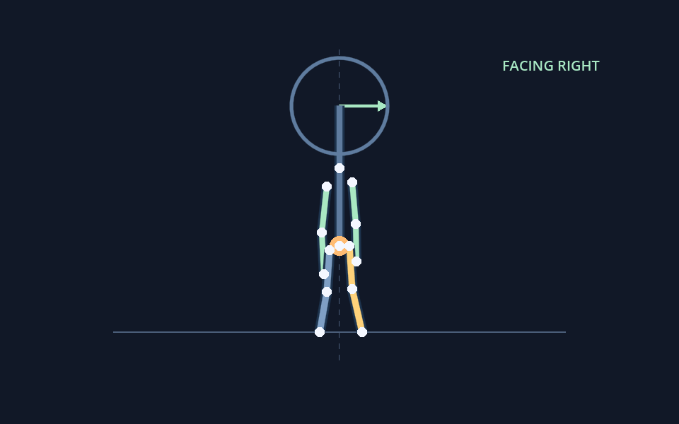
当前测试基底
这一组仍是旧的重绘适配版，仅作为对照，不再称为推荐基底。它用于确认头部组合和运行链路。
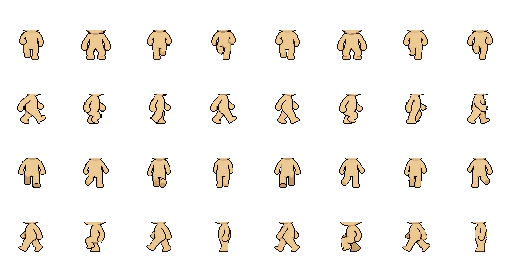
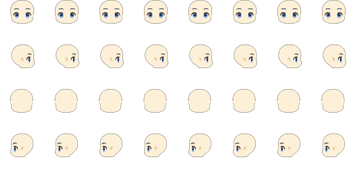
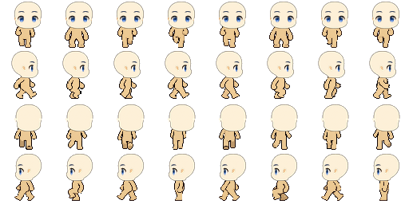
重点：推荐基底横向腿部层次修正版
修正规则：第 3 帧之后切换前腿，第 7 帧保持与第 4–6 帧相同的层次，第 8 帧再返回；每帧仍保留两条腿。
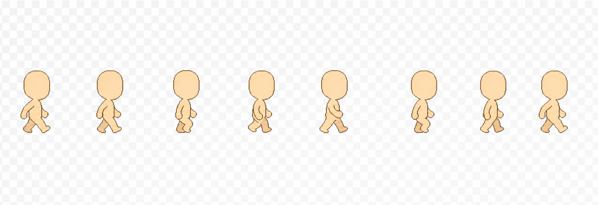
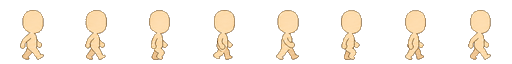
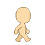
运行预览 GIF
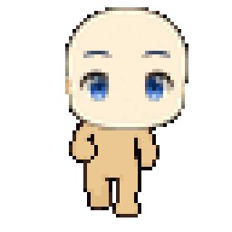
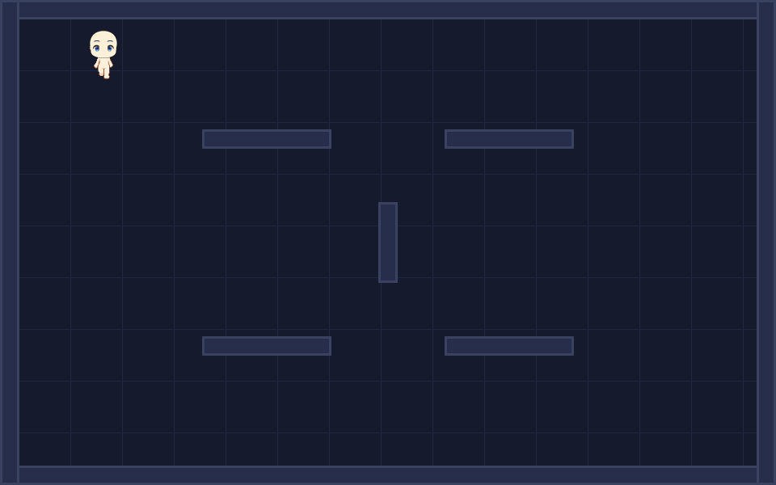
纵向候选与对齐检查
纵向身体仍是候选；前后方向头部使用 [0,0] 偏移，避免继承旧身体的水平标定。
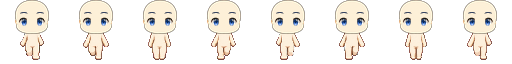
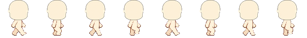
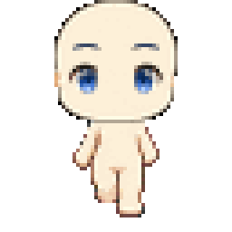
方向映射
| 行 | 方向 | 输入 | 当前来源 |
|---|---|---|---|
| 0 | front | S / down | 重绘适配版；纵向模式使用 front candidate |
| 1 | right | D / right | 推荐横向修正版作为独立候选；旧适配版保留对照 |
| 2 | back | W / up | 重绘适配版；纵向模式使用 back candidate |
| 3 | left | A / left | 等待 right 方向层次确认后再镜像/生成 |
验证入口
tools/build_recommended_horizontal_fix.py
tools/run_headless_tests.ps1 -RebuildHead -VerticalCandidate
tools/capture_walk_gif.ps1 -RebuildHead -VerticalCandidate -VerticalOnly
tools/publish_preview.py --snapshot-name current_test_base_clean